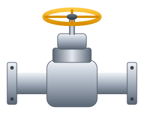

Engineering Trust, One Valve at a Time
Founded in a 2,000 sq ft workshop in 1998, Aurex today operates a 150,000 sq ft integrated manufacturing campus serving customers in over 45 countries.
A Valve Company Run by Engineers
Aurex Flow Controls designs and manufactures industrial valves for the world's most demanding process industries. Our 600-strong team includes metallurgists, design engineers, machinists and NDT specialists who share one goal: valves that seal tight and last long.
With in-house foundry, CNC machining, hard-facing, assembly and an advanced testing laboratory, we control every stage of production, from melt chemistry to final painting.
Our Mission
To deliver reliable, safe and efficient flow-control solutions that protect people, plants and the planet.
Our Vision
To be the most trusted valve partner for critical-service applications worldwide by 2030.

From Molten Metal to Certified Valve
Every valve follows a documented, traceable route through our facility, with inspection hold-points at every stage.
Design & Simulation
3D CAD, FEA stress analysis and CFD flow modelling to ASME B16.34 and API codes.
Casting & Forging
In-house induction foundry with spectro-analysis of every heat for verified chemistry.
Precision Machining
5-axis CNC centres, PTA hard-facing and lapping for mirror-finish sealing surfaces.
Testing & Dispatch
Hydro, pneumatic, cryogenic, fire-safe and fugitive-emission testing before export packing.
Milestones That Shaped Us
The Beginning
Started as a valve repair and reconditioning workshop with 12 employees.
First Manufacturing Plant
Commissioned our first plant for gate, globe and check valves; ISO 9001 certified.
API Monogram
Received API 6D and API 600 licences; first export orders to the Middle East.
In-House Foundry
Opened an induction foundry and a cryogenic testing facility down to −196 °C.
Global Expansion
Opened sales & service hubs in Dubai, Houston and Rotterdam.
Smart Valves
Launched IoT-enabled actuated valves with predictive maintenance analytics.
What We Stand For
Safety First
No valve leaves our plant unless we would install it in our own home.
Innovation
8% of revenue reinvested in R&D, testing and digital tools.
Partnership
Long-term relationships with customers, suppliers and our people.
Sustainability
Low-emission valves, solar-powered plant and recycled steel scrap.
Visit Our Facility
Witness testing, audit our processes or meet our engineering team in person.